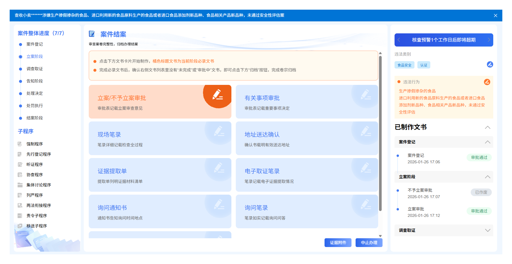
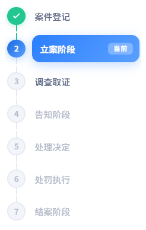
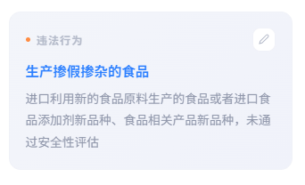
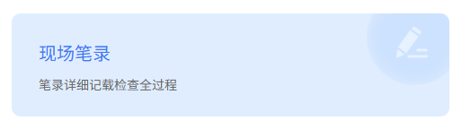
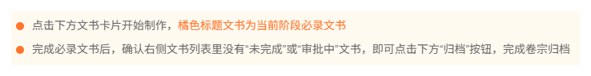

20260324签章失败处理逻辑 PRD（电脑端和移动端同步修改，原型只出电脑端，移动端参照电脑端改）
涉及签章的文书见钉钉文档
https://alidocs.dingtalk.com/i/nodes/Y1OQX0akWmlARkKQt3kPvD6m8GlDd3mE?utm_scene=team_space
《20251013海口WPS改造》sheet
一、直接签章类型文书（不用审批、文书完成后即签章）
二、签章审批类型文书（文书提交后需签章审批人审批完成后签章）
三、告知书、听证告知书（告知类/听证告知类有关事项审批通过，文书自动签章）
1、先审批，后制作文书
2、先制作文书，后审批
3、签章失败/待签章状态的连锁影响
四、处罚决定书/不予处罚决定书（处理决定审批表审批通过，文书自动签章）
五、公共逻辑
提示
签章服务器异常导致《XX文书》签章失败，请执法人员至案件办理页的已制作文书列表，点击左侧 " " 下的 "签章" 按钮重新尝试电子签章。




必录

《XX文书》、《XX文书》签章失败（签章服务器异常），请在在已制作文书列表找到该文书，点击左侧 " " 按钮下的 "签章" 按钮重试。

告知阶段
行政处罚告知书
签章失败
签章
行政处罚告知书
待签章

这里改成“未完成”、“审批中”、“待签章”